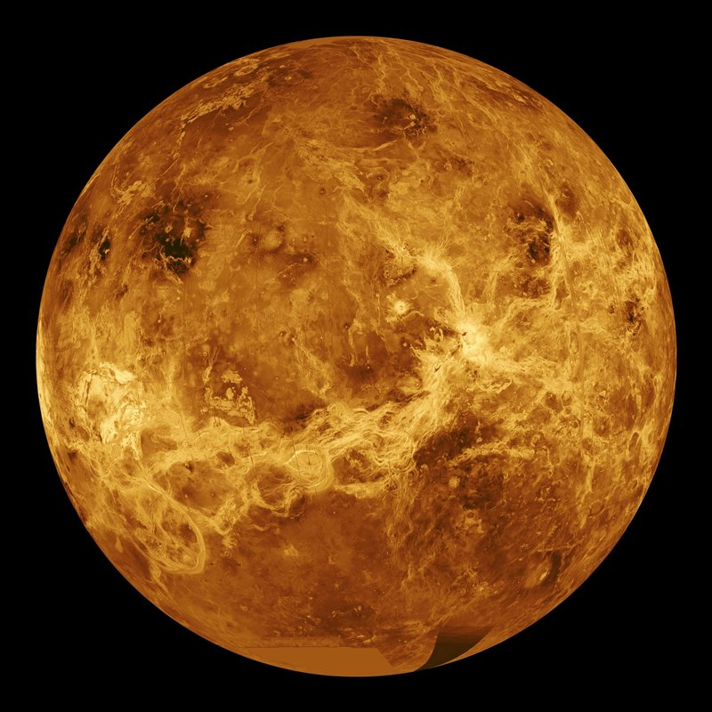

VENUS

Conocido como el “planeta gemelo” de la Tierra por su tamaño y composición similar.
Sin embargo, su atmósfera es muy densa y rica en dióxido de carbono, lo que genera un efecto invernadero extremo que convierte a Venus en el planeta más caliente del sistema solar.
Su superficie está cubierta de volcanes y montañas.